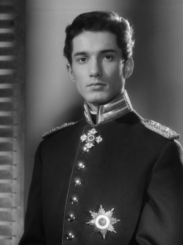

#376 Karl May 09 - Der Ölprinz
Alternativ: Oil Prince, The (Originaltitel)


 IMDB-Wertung: 5.9 / 10
IMDB-Wertung: 5.9 / 10  Metascore: 0
Metascore: 0 
In dem Wildwest-Nest Tucson wartet ein Treck von Siedlern auf den Scout, der sie zum Shelly-See bringen soll. Dort wollen sie sich friedlich niederlassen. Doch der Scout erscheint nicht. Ein skrupelloser Geschäftsmann, der im ganzen Westen nur als "Der Ölprinz" bekannt ist, hat ihn töten lassen. Er will das Land am See für sich haben, um es einer Bank zu verkaufen. Angeblich sollen sich hier höchst ergiebige Ölquellen befinden. Winnetou, Old Surehand und Old Wabble entlarven das Ganze als groß angelegten Schwindel. Während Wabble den Treck durch die Wildnis führt, wollen Winnetou und Surehand den Navajos klarmachen, dass die Siedler in friedlicher Absicht durch ihr Land ziehen. Doch da lässt der Ölprinz den Sohn des Häuptlings heimtückisch ermorden. Er schiebt die Tat den Siedlern in die Schuhe. Winnetou macht sich auf die Suche nach dem wahren Mörder. Ihm bleibt nicht mehr viel Zeit.
Jahr: 1965
Dauer: 89 Minuten
FSK: 6
Land: West-Deutschland Studio: Constantin FilmTonspuren:
Untertitel: Deutsch,
Auflösung: 1080p (1920x816) Größe: 8140 MB
Genre: Western, Abenteuer
Regisseur: Harald Philipp
Drehbuch: Karl May, Fred Denger, Harald Philipp
Soundtrack: Martin Böttcher
Darsteller:
 Stewart Granger als Old Surehand
Stewart Granger als Old Surehand Terence Hill als Richard Forsythe
Terence Hill als Richard Forsythe-  Christian Wolff als Richard Forsythe , uncredited
 Pierre Brice als Winnetou
Pierre Brice als Winnetou- Harald Leipnitz als The Oilprince
 Macha Méril als Lizzy
Macha Méril als Lizzy Walter Barnes als Bill Campbell
Walter Barnes als Bill Campbell- Antje Weisgerber als Mrs. Ebersbach
- Milan Srdoc als Old Wabble
- Gerd Frickhöffer als Kovacz
- Veljko Maricic als Bergmann
- Dusan Janicijevic als Butler
- Slobodan Dimitrijevic als Knife
- Davor Antolic als Paddy
- Zvonimir Crnko als Billy Forner
- Milivoje Popovic-Mavid als Mokaschi
- Ilija Ivezic als Webster
- Heinz Erhardt als Kantor Hampel
- Rainer Brandt als Butler , uncredited
- Marinko Cosic als Tobby , uncredited
- Petar Dobric als Nitsas-Ini , uncredited
- Thomas Eckelmann als Winnetou , uncredited
- Arne Elsholtz als Jimmy Campbell , uncredited
- Hans W. Hamacher als Duncan , uncredited
- Sime Jagarinac als Mokaschi's son , uncredited
- Jovan-Burdus Janicijevic als Bandit , uncredited
- Helmo Kindermann als Old Surehand , uncredited
 Reinhard Kolldehoff als Webster , uncredited
Reinhard Kolldehoff als Webster , uncredited- Klaus W. Krause als Mokaschi , uncredited
- Vladimir Leib als Duncan , uncredited
 Arnold Marquis als Campbell , uncredited
Arnold Marquis als Campbell , uncredited- Lutz Moik als Paddy , uncredited
- Kurt Mühlhardt als Bergmann , uncredited
- Antun Nalis als Jenkins , uncredited
- Petar Petrovic als Jimmy Campbell , uncredited
- Tihomir Polanec als Bandit , uncredited
- Hugo Schrader als Old Wabble , uncredited
- Branko Supek als Jack Campbell , uncredited
- Slobodan Vedernjak als John Campbell , uncredited
- Hans Wocke als Jenkins , uncredited
Datei: X:\Person\Karl May\Karl May 09 - Der Ölprinz (1965, FSK6, 1920x816).mkv seit 20.02.2015
Festplatte: HD Collection-7+mehr(A-Z)+Person
 Es gibt insgesamt 20 Filme in der Gruppe 'Person\Karl May'
Es gibt insgesamt 20 Filme in der Gruppe 'Person\Karl May'